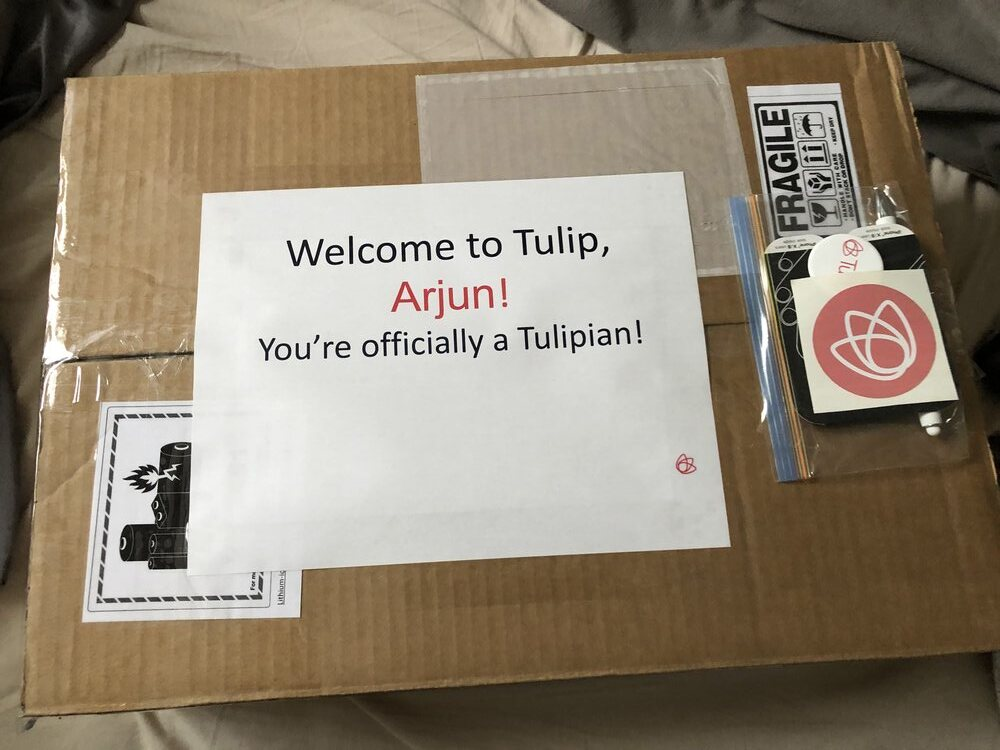

Welcome! This is my second post in the series that will detail my work experiences throughout my coop program at the University of Guelph. For my second work term, I had the amazing opportunity to work as a Software Developer Coop at Tulip from May 2022 to August 2022.
Tulip is an innovative SaaS company which is transforming and modernizing retail, setting a new standard for omnichannel commerce.  My work term at Tulip was fully remote, but despite that, I could still appreciate the great company culture - there were plenty of activities that I could partake in, such as weekly video discussions, Tech Talks, coffee chats and there was even a virtual Toronto Zoo visit at the end of the term.
I worked as a Software Developer Coop in a team that works with Tulip's sister company - Well.ca. My tasks ranged from working on the client side (improving accessibility and adding other features for general usability) to maintaining and updating the internal product management system called Poolhouse.
On my first day, right after the IT orientation, I had a call with one of the senior developers in my team, so he could guide us through the codebase and different systems that the team uses. Although it wasn't very detailed, I did find it very useful as a quick preview into the things that I might end up working on. Unfortunately, I didn't get to find my way around the codebase because our environment was still not setup properly. This is because our coop batch was the first to use M1 Macs as opposed to Intel Macs, so it wasn't as simple as just using the exact same configuration. This took about two weeks to figure out, however, I don't feel like that time was wasted, since I completed an internet security course as well as an accessibility course in the meantime, which was undoubtedly useful for when I was making accessibility and usability updates later in the term.
Apart from that, my work term was very consistent, in the sense that there was the same process for completing tickets, there were daily standups, weekly or biweekly meetings and checkups with my manager, so I never felt lost with what I was doing.
For the entirety of my work term, I mostly worked with JavaScript, PHP, HTML, and some CSS, which I expected to be like my previous work term, however, it was quite different, since in my last work term, I used mostly React and MaterialUI, but at Tulip I used mostly vanilla JavaScript and jQuery, with some SQL if I needed to update or query databases. Also, it was very different working with such a large codebase, so for the first couple of weeks, I would have to search through multiple different files to find the exact one that I needed to work on.
Something that I was excited to get involved in prior to starting, was working with clients and being able to make impactful changes, which is something I was able to delve into during my time at Tulip. I could clarify my questions regarding tickets with the team at Well.ca, mainly through written communication, but I also occasionally had the opportunity to join a weekly meeting with them. For one of my first major tickets, I had to reach out to Envoi - a courier that delivers orders for Well.ca - to discuss how things worked and to tackle any bugs that came up. I continued to communicate with them for future tickets and it gave me a real sense of accomplishment and independence.
One day in each coop term is a designated Hackday, where employees are encouraged to research or work on a project that they are interested in, with the only real requirement being that you should present it at the end of the day. For our Hackday, I teamed up with a fellow UofG coop, Haashir, and we came up with Muncher, an iOS app for finding and randomizing recipes - for people like us, who are always conflicted with what to eat. Haashir took over the design side of things, and I decided to try and implement the app using Swift and SwiftUI. Since I had no experience with Swift or iOS development before Hackday, most of my time was spent trying to learn the syntax and basics, and learn how to do different things such as implement navigation, position components etc. Given that we only had 7 hours, I didn't get too far, and just managed to implement the landing page, but regardless, it was fun to get away from day-to-day work and get some time to work on personal interests/projects.
My first goal was to familiarize myself with client-based work and projects and be able to communicate with them and see the end goal or bigger picture of a task. I can definitely say that I have achieved this goal since I would always approach my tickets with the client in mind. I was able to effectively communicate with the client regarding the status of tickets, any issues that arose or with clarifying exactly what was being asked. In terms of understanding the end goal or bigger picture, there were a few moments where I was able to offer up ideas for things that could be added to increase usability for the client, or where I found a common solution to interlinked tickets.
My second goal was to improve my analytical and problem-solving skills in order to become more time efficient. I would say that I have improved on these skills since the start of the term, since I quickly had to understand the structure of the codebase and independently work through figuring out how a piece of code works and the system flow behind it. By the end of the work term, the time taken by me to plan out how to tackle a ticket dropped drastically, therefore it definitely did make me more time efficient.
My third and final goal was to improve my testing efficiency and effectiveness. My initial plan to achieve this goal was to have a user-centric mindset when working through a ticket, and try and come up with as many potential users in order to come up with more use cases. However, regardless of me doing this, I feel like my testing speed/efficiency didn't increase significantly. I think this is mostly due to testing being reliant on the actual problem at hand and whether or not the code I've written contains errors or not.
Getting the chance to work for Tulip for my second coop work term was a very pleasant and insightful experience. I'm going to take away so much from this experience, especially as it was my first time working in a relatively large company - so it showed me the type of work that I was able to do, as well as the development workflow.
I'd like to thank everyone in my team for being so welcoming and such a pleasure to work with. Thanks to Eva for being the nicest human being ever (and for setting up my equipment). Thanks to Kyler for making the onboarding process as smooth as possible, and being so helpful, even as a fellow coop. I'd also like to thank Chris for being so fun, friendly and willing to help, and I would like to thank Eugene in particular for being so supportive and guiding me whenever I needed it.